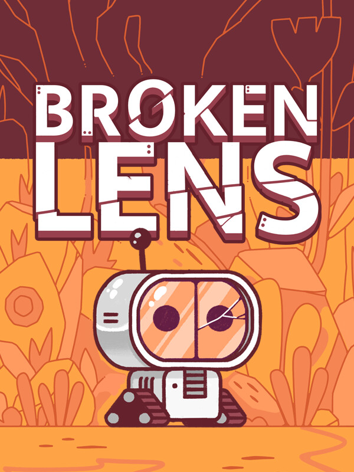

Broken Lens
Broken Lens
Details
|  | |
| Playtime | 7h 33m 0s |
| Last Activity | 2024-12-22 22:37:02 |
| Added | 2024-11-28 23:59:07 |
| Modified | 2025-10-02 9:44:54 |
| Completion Status | Completed |
| Library | Steam |
| Source | Steam |
| Platform | Macintosh PC (Linux) PC (Windows) |
| Release Date | 2024-07-21 |
| Community Score | |
| Critic Score | |
| User Score | |
| Genre | Adventure Indie Point-and-click Puzzle |
| Developer | Team Run |
| Publisher | Flying Oak Games Team Run |
| Feature | Single Player |
| Links | Steam Discord YouTube Twitch |
| Tag | 2D Adventure Cartoony Casual Choose Your Own Adventure Collectathon Colorful Cute Exploration Hand-drawn Hidden Object Linear Lore-Rich Nature Point & Click Puzzle Relaxing Robots Sci-fi Singleplayer |
Description

Broken Lens is a relaxing game where you will discover the story of a little robot with a sight problem.

Gameplay
Inspired by the classic game of our childhood "spot the differences", Broken Lens allows you to renew the experience with a new exploration system.Move the point of view and zoom in to travel through works of art to find and get rid of the differences between your two visual sensors.

Take your time to explore the artworks. Don’t forget to pay attention to the smallest and the biggest details, anomalies can be hidden anywhere.
Collect the lost pages scattered across different biomes to know more about this world!

Features
- - A relaxing wholesome experience
- - Travel thought artworks with a smooth exploration system
- - Adorable creatures and environments
- - Relaxing journey where you play at your own pace
- - Various worlds to explore
- - Hidden pages to collect
- - A rich and extremely cute universe
- - Escape to a peaceful world
- - Investigate to help the little robot and understand its background

Development team
Team RUN is a tiny team of French indie dev composed by a combination of effort from EncreMecanique, Hephep, Malyss, Welrod, Yomoeh and Mellyfroggy.EncreMecanique, known as a tattoo artist, now wears a new hat as graphic designer. Every single element of Broken Lens is hand-drawn.
On the other hand, Hephep is involved as our game developer. With meticulousness, he designed a new exploration system and a smooth gameplay to renew the experience of spotting the differences.
Malyss, our narrative designer, is the one who gives the game its singular sparkle and strong overall cohesion to the little robot’s story.
Welrod, our sound designer, polished the tiniest details for a perfect immersion.
Yomoeh, implicated as the music composer. He brought his magic touch to harmoniously complement the project. His captivating music compositions and soundscape will allow you to have an enchanting experience.
Finally, Mellyfroggy, allied to the team as social media manager. She’s our voice on different platforms and globally on the internet.